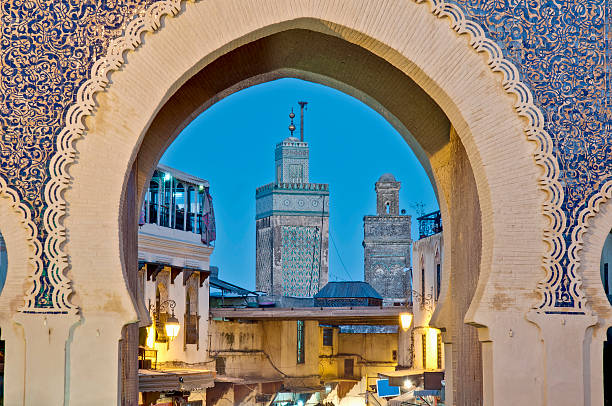
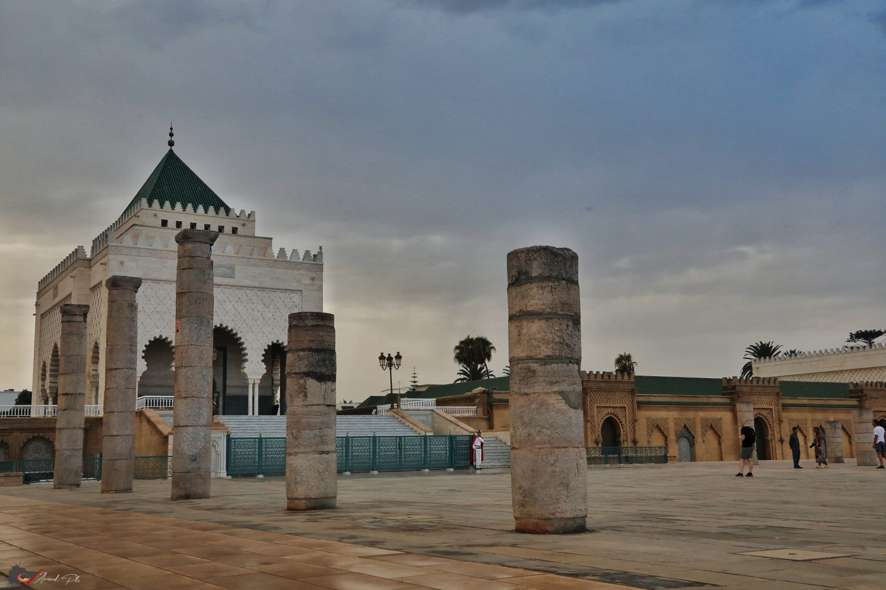

Marrakech
Known as the Red City, Marrakech is famous for its old medina, numerous souks, ancient palaces like Badi Palace and Bahia Palace, the striking Koutoubia Mosque, the energetic Djemaa el-Fna and the Saadian Tombs. The former capital of Fes boasts plenty of stunning architecture, though it is perhaps best known for its large tanneries and for being home to one of the oldest universities in the world. Meknes has one of the most impressive monumental gates in all of Morocco – Bab el-Mansour – whilst horse-drawn carriages make a great way to explore this charming and relaxed imperial city.

Fes
Fes located in the northeast of the country. Fes is one of the most authentic historic Moroccan cities with a well-preserved tradition and customs.The town’s medina is a part of the UNESCO World Heritage Site. The city centre is brimming with mosques, shops, food stands and numerous artists displaying their works of art in the streets. Craftsmanship in architecture are: Bou Inania Madrasa, Bab Bou Jeloud and Al-Attarine Madrasa.
Meknès
Meknès was founded in the 10th century by the Zanātah tribe of the Meknassa Imazighen (Berbers) a group of villages among olive groves it grew around Takarart. palaces and mosques that earned for Meknès the name "Versailles of Morocco" the city wall, fortified by four-cornered towers and pierced by nine ornamented gates, still stands.

Rabat
Rabat is Morocco's capital and 'Royal City'. Known nowadays as the 'Washington' of North Africa, because of its parks, boulevards, monuments, embassies and government buildings, Rabat is also the seat of the Royal Family. Not surprisingly, therefore, it is home to a great many bewitching palaces, mosques and parks-all in the sensual North African style that evokes visions of a thousand and one nights.